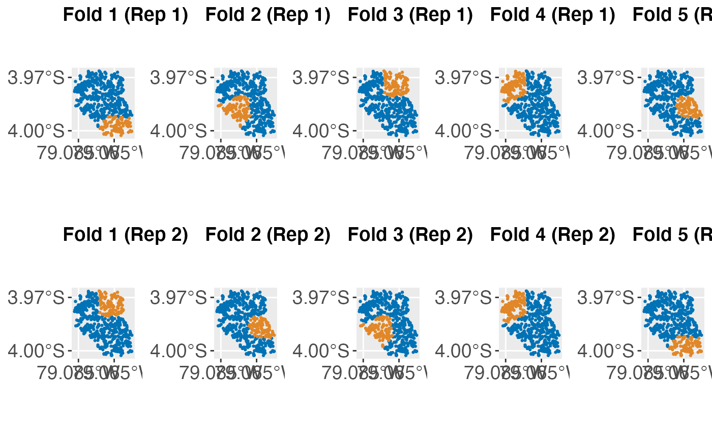
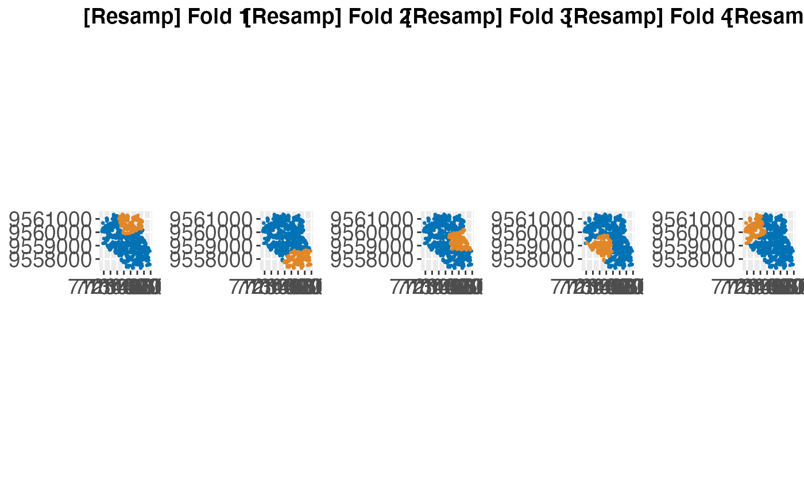
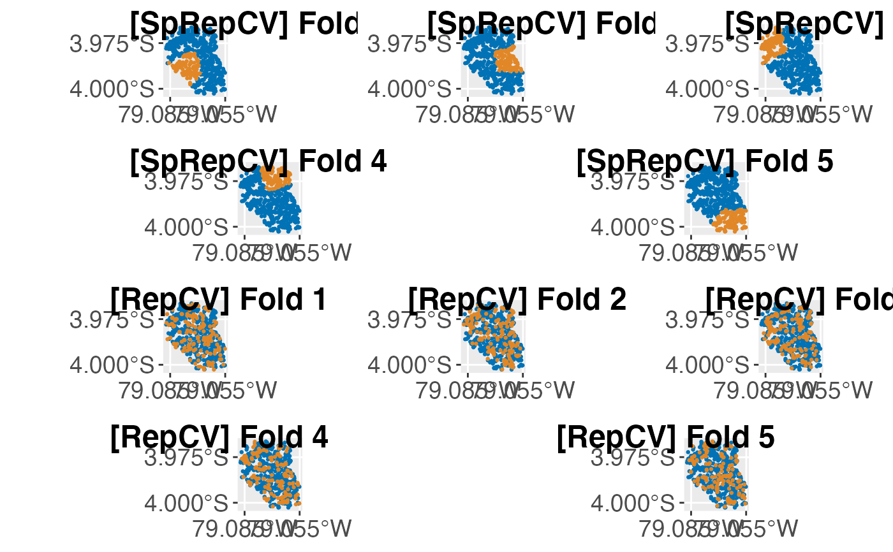
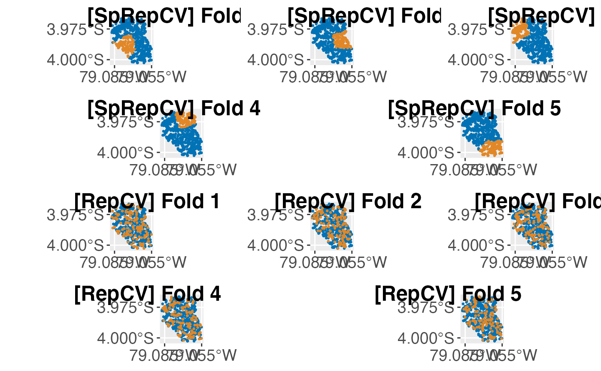

Create (spatial) resampling plot objects.
Source:R/createSpatialResamplingPlots.R
createSpatialResamplingPlots.RdVisualize partitioning of resample objects with spatial information.
Usage
createSpatialResamplingPlots(
task = NULL,
resample = NULL,
crs = NULL,
datum = 4326,
repetitions = 1,
color.train = "#0072B5",
color.test = "#E18727",
point.size = 0.5,
axis.text.size = 14,
x.axis.breaks = waiver(),
y.axis.breaks = waiver()
)Arguments
- task
Task
Task object.- resample
ResampleResult or named
listwith (multiple) ResampleResult
As returned by resample.- crs
integer
Coordinate reference system (EPSG code number) for the supplied coordinates in theTask.- datum
integer
Coordinate reference system which should be used in the resulting map.- repetitions
integer
Number of repetitions.- color.train
character
Color for train set.- color.test
character
Color for test set.- point.size
integer
Point size.- axis.text.size
integer
Font size of axis labels.- x.axis.breaks
numeric
Custom x axis breaks- y.axis.breaks
numeric
Custom y axis breaks
Value
(list of 2L containing (1) multiple `gg`` objects and (2) their
corresponding labels.
Details
If a named list is given to resample, names will appear in the title of
each fold.
If multiple inputs are given to resample, these must be named.
This function makes a hard cut at five columns of the resulting gridded plot.
This means if the resample object consists of folds > 5, these folds will
be put into the new row.
For file saving, we recommend to use cowplot::save_plot.
When viewing the resulting plot in RStudio, margins may appear to be different than they really are. Make sure to save the file to disk and inspect the image.
When modifying axis breaks, negative values need to be used if the area is located in either the western or southern hemisphere. Use positive values for the northern and eastern hemisphere.
CRS
The crs has to be suitable for the coordinates stored in the Task.
For example, if the coordinates are UTM, crs should be set to a
UTM projection.
Due to a limited axis space in the resulting grid (especially on the x-axis),
the data will by default projected into a lat/lon projection, specifically
EPSG 4326.
If other projections are desired for the resulting map, please set argument
datum accordingly. This argument will be passed onto ggplot2::coord_sf.
See also
Other plot:
plotBMRBoxplots(),
plotBMRRanksAsBarChart(),
plotBMRSummary(),
plotCalibration(),
plotCritDifferences(),
plotLearningCurve(),
plotPartialDependence(),
plotROCCurves(),
plotResiduals(),
plotThreshVsPerf()
Examples
# \donttest{
rdesc = makeResampleDesc("SpRepCV", folds = 5, reps = 4)
r = resample(makeLearner("classif.qda"), spatial.task, rdesc)
#> Resampling: repeated spatial cross-validation
#> Measures: mmce
#> [Resample] iter 1: 0.3396226
#> [Resample] iter 2: 0.5988701
#> [Resample] iter 3: 0.2824427
#> [Resample] iter 4: 0.3239437
#> [Resample] iter 5: 0.4366197
#> [Resample] iter 6: 0.3395062
#> [Resample] iter 7: 0.5042735
#> [Resample] iter 8: 0.6035503
#> [Resample] iter 9: 0.2689655
#> [Resample] iter 10: 0.3354430
#> [Resample] iter 11: 0.5988701
#> [Resample] iter 12: 0.3239437
#> [Resample] iter 13: 0.4366197
#> [Resample] iter 14: 0.3396226
#> [Resample] iter 15: 0.2824427
#> [Resample] iter 16: 0.3353293
#> [Resample] iter 17: 0.5106383
#> [Resample] iter 18: 0.2719298
#> [Resample] iter 19: 0.3333333
#> [Resample] iter 20: 0.3010204
#>
#> Aggregated Result: mmce.test.mean=0.3883494
#>
## -------------------------------------------------------------
## single unnamed resample input with 5 folds and 2 repetitions
## -------------------------------------------------------------
plots = createSpatialResamplingPlots(spatial.task, r, crs = 32717,
repetitions = 2, x.axis.breaks = c(-79.065, -79.085),
y.axis.breaks = c(-3.970, -4))
cowplot::plot_grid(plotlist = plots[["Plots"]], ncol = 5, nrow = 2,
labels = plots[["Labels"]])

## --------------------------------------------------------------------------
## single named resample input with 5 folds and 1 repetition and 32717 datum
## --------------------------------------------------------------------------
plots = createSpatialResamplingPlots(spatial.task, list("Resamp" = r),
crs = 32717, datum = 32717, repetitions = 1)
cowplot::plot_grid(plotlist = plots[["Plots"]], ncol = 5, nrow = 1,
labels = plots[["Labels"]])

## -------------------------------------------------------------
## multiple named resample inputs with 5 folds and 1 repetition
## -------------------------------------------------------------
rdesc1 = makeResampleDesc("SpRepCV", folds = 5, reps = 4)
r1 = resample(makeLearner("classif.qda"), spatial.task, rdesc1)
#> Resampling: repeated spatial cross-validation
#> Measures: mmce
#> [Resample] iter 1: 0.2689655
#> [Resample] iter 2: 0.5083333
#> [Resample] iter 3: 0.5773810
#> [Resample] iter 4: 0.3354037
#> [Resample] iter 5: 0.3312102
#> [Resample] iter 6: 0.4366197
#> [Resample] iter 7: 0.3239437
#> [Resample] iter 8: 0.2824427
#> [Resample] iter 9: 0.3396226
#> [Resample] iter 10: 0.5988701
#> [Resample] iter 11: 0.3354037
#> [Resample] iter 12: 0.5988701
#> [Resample] iter 13: 0.2781955
#> [Resample] iter 14: 0.4375000
#> [Resample] iter 15: 0.3308824
#> [Resample] iter 16: 0.2624113
#> [Resample] iter 17: 0.5000000
#> [Resample] iter 18: 0.3354430
#> [Resample] iter 19: 0.3437500
#> [Resample] iter 20: 0.6011905
#>
#> Aggregated Result: mmce.test.mean=0.4013220
#>
rdesc2 = makeResampleDesc("RepCV", folds = 5, reps = 4)
r2 = resample(makeLearner("classif.qda"), spatial.task, rdesc2)
#> Resampling: repeated cross-validation
#> Measures: mmce
#> [Resample] iter 1: 0.3466667
#> [Resample] iter 2: 0.3400000
#> [Resample] iter 3: 0.3400000
#> [Resample] iter 4: 0.3466667
#> [Resample] iter 5: 0.3178808
#> [Resample] iter 6: 0.3666667
#> [Resample] iter 7: 0.2800000
#> [Resample] iter 8: 0.3774834
#> [Resample] iter 9: 0.3333333
#> [Resample] iter 10: 0.3266667
#> [Resample] iter 11: 0.3866667
#> [Resample] iter 12: 0.3245033
#> [Resample] iter 13: 0.3533333
#> [Resample] iter 14: 0.3200000
#> [Resample] iter 15: 0.3066667
#> [Resample] iter 16: 0.3466667
#> [Resample] iter 17: 0.3200000
#> [Resample] iter 18: 0.3000000
#> [Resample] iter 19: 0.3866667
#> [Resample] iter 20: 0.3377483
#>
#> Aggregated Result: mmce.test.mean=0.3378808
#>
plots = createSpatialResamplingPlots(spatial.task,
list("SpRepCV" = r1, "RepCV" = r2), crs = 32717, repetitions = 1,
x.axis.breaks = c(-79.055, -79.085), y.axis.breaks = c(-3.975, -4))
cowplot::plot_grid(plotlist = plots[["Plots"]], ncol = 5, nrow = 2,
labels = plots[["Labels"]])
 ## -------------------------------------------------------------------------------------
## Complex arrangements of multiple named resample inputs with 5 folds and 1 repetition
## -------------------------------------------------------------------------------------
p1 = cowplot::plot_grid(plots[["Plots"]][[1]], plots[["Plots"]][[2]],
plots[["Plots"]][[3]], ncol = 3, nrow = 1, labels = plots[["Labels"]][1:3],
label_size = 18)
p12 = cowplot::plot_grid(plots[["Plots"]][[4]], plots[["Plots"]][[5]],
ncol = 2, nrow = 1, labels = plots[["Labels"]][4:5], label_size = 18)
p2 = cowplot::plot_grid(plots[["Plots"]][[6]], plots[["Plots"]][[7]],
plots[["Plots"]][[8]], ncol = 3, nrow = 1, labels = plots[["Labels"]][6:8],
label_size = 18)
p22 = cowplot::plot_grid(plots[["Plots"]][[9]], plots[["Plots"]][[10]],
ncol = 2, nrow = 1, labels = plots[["Labels"]][9:10], label_size = 18)
cowplot::plot_grid(p1, p12, p2, p22, ncol = 1)

# }
## -------------------------------------------------------------------------------------
## Complex arrangements of multiple named resample inputs with 5 folds and 1 repetition
## -------------------------------------------------------------------------------------
p1 = cowplot::plot_grid(plots[["Plots"]][[1]], plots[["Plots"]][[2]],
plots[["Plots"]][[3]], ncol = 3, nrow = 1, labels = plots[["Labels"]][1:3],
label_size = 18)
p12 = cowplot::plot_grid(plots[["Plots"]][[4]], plots[["Plots"]][[5]],
ncol = 2, nrow = 1, labels = plots[["Labels"]][4:5], label_size = 18)
p2 = cowplot::plot_grid(plots[["Plots"]][[6]], plots[["Plots"]][[7]],
plots[["Plots"]][[8]], ncol = 3, nrow = 1, labels = plots[["Labels"]][6:8],
label_size = 18)
p22 = cowplot::plot_grid(plots[["Plots"]][[9]], plots[["Plots"]][[10]],
ncol = 2, nrow = 1, labels = plots[["Labels"]][9:10], label_size = 18)
cowplot::plot_grid(p1, p12, p2, p22, ncol = 1)

# }